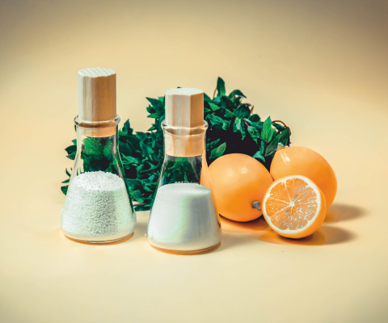

Консерванты
Консерванты относятся к особой группе пищевых добавок, позволяющих в значительной степени увеличить срок хранения продукта. Действие консерванта заключается в том, чтобы препятствовать размножению вредоносных бактерий, плесени и дрожжей. Так, консервирующее
Подробнее